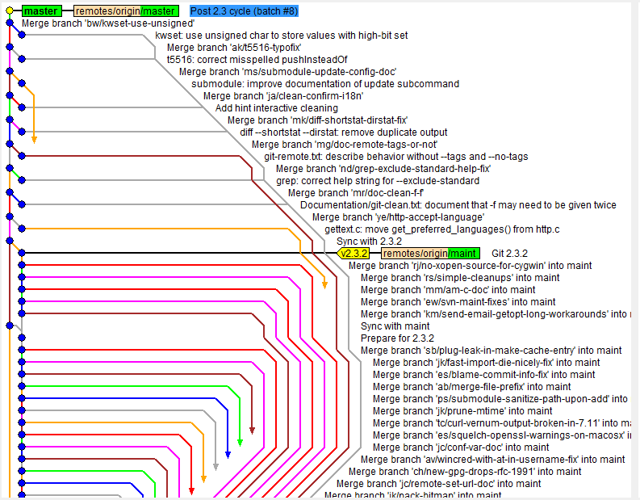
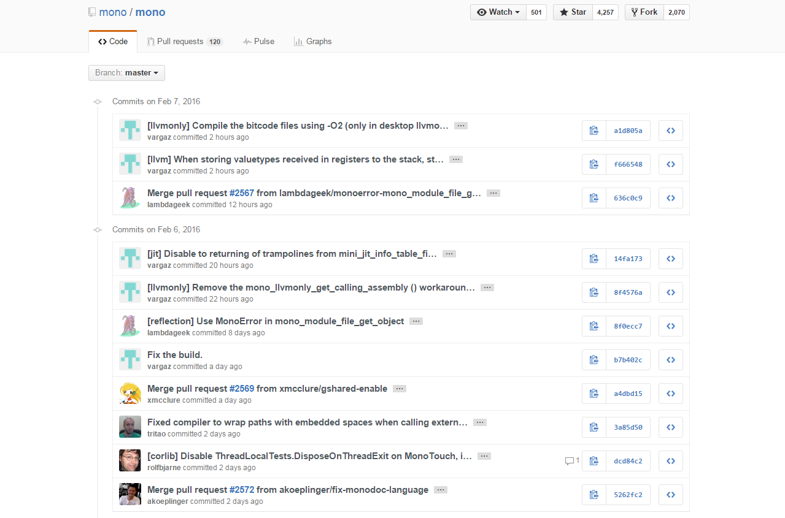
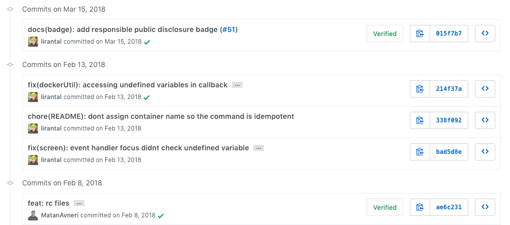
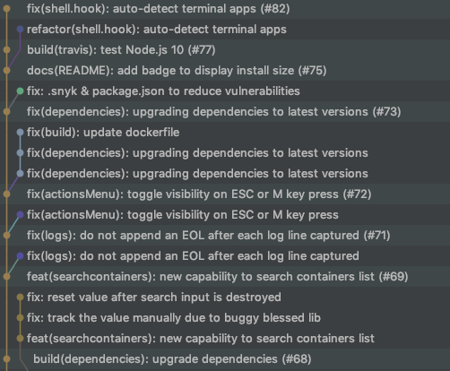

Git Workflows
Welcome

Up?

Git
Git
- Source Control
Git === Mess (sometimes)

Git === Mess (sometimes)
Let's Dive in

Commits
Commits
We do hundreds every day.
Best Case - We write for ourselves.
Worst Case - We pray that no one will read them.
Commits - Not readable
Commits - Let's solve
Use a dedicated convention.
For example Semantic Commits
Commits - Semantic
Follow a
guideline
Commits - Semantic
Use a Tool
/
Memorize them
Commits - Readable :)
Merge/Pull Requests

Merge/Pull Requests
- Contain many commits that you don't care about
- Contain too many commits...
Merge/Pull Requests
Merge/Pull Requests
Squash

Merge/Pull Requests
Squash
- Commit by Features
- Readability
- Be able to rollback entire features
Branches
Branches
- Too many to know what's going on
- Usually only relevant to one person
Branches
Solution
Don't add branches to master repository
Branches
Solution
Forks!!!

Forks
- Upstream - Original Repo
- Downstream - Your "copy"
Releases

Releases
Semantic Release
- Commits of type fix will trigger bugfix releases, think 0.0.1
- Commits of type feat will trigger feature releases, think 0.1.0
- Commits with BREAKING CHANGE in body or footer will trigger breaking releases, think 1.0.0
What do we want?
- Pinpoint Changes
- Easy to Contribute
- Easy Rollbacks
Solutions
- Commits by Features
- Commits with a Convention
- Squash
- Forks
Resources
Thanks :)